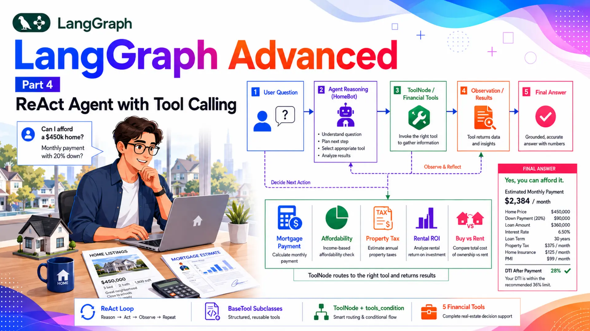
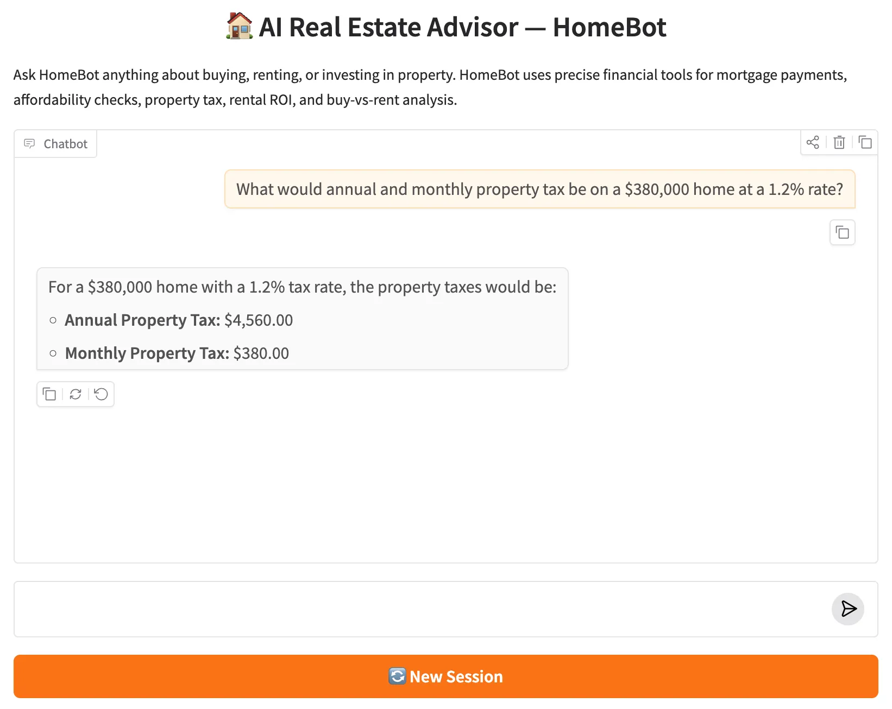

LangGraph Advanced: Part 4 — ReAct Agent with Tool Calling

📚 Table of Contents
🏠 1. Introduction
Meet Alex — a first-time homebuyer staring at a $450,000 listing. Before making an offer, Alex has real questions that need real numbers: What's the monthly mortgage payment with 20% down? Can Alex actually afford this on a $95,000 salary with an existing car loan? What does property tax add to the monthly cost? The answers aren't estimates — they're formulas with exact inputs.
Ask a plain LLM for a mortgage payment and it might say something like "approximately $2,200 to $2,500 per month." That range is useless for a financial decision. The LLM isn't being evasive — it genuinely can't reliably execute the amortisation formula. What it can do is reason about what calculation is needed and delegate the execution to a tool.
That's the ReAct (Reasoning + Acting) pattern: the LLM reasons about what to do, acts by calling a tool, observes the precise result, reasons about whether it needs another tool call, and eventually produces a final answer grounded in exact numbers. LangGraph turns this loop into a graph — two nodes, one conditional edge, and the agent runs until it stops calling tools.
What you'll build: HomeBot — an AI Real Estate Advisor backed by five financial tools. Users ask questions in plain English; HomeBot reasons about which tool to call, gets exact calculations, and synthesises a clear, grounded answer. Tools are defined using the production-grade BaseTool subclassing pattern — one class per file, Pydantic input schema, description loaded from a prompt file.
This post is Part 4 of the LangGraph Advanced series. Part 5 of the Basics series introduced tool calling using the @tool decorator and the create_react_agent shortcut. Here the goal is different: build the ReAct loop manually so every component is visible, and use BaseTool subclassing — the production pattern that keeps tool definitions inspectable, testable, and easily prompt-tuned.
ReAct Loop
Agent reasons → calls a tool → observes result → reasons again. Repeats until the LLM produces a final answer with no tool calls.
BaseTool Subclasses
Production tool pattern: one class per file, Pydantic args_schema, description loaded from prompts/. Testable and maintainable.
ToolNode + tools_condition
Prebuilt LangGraph components: ToolNode executes function calls; tools_condition routes to tools or END.
5 Financial Tools
Mortgage payment, home affordability (28/36 rule), property tax, rental ROI, and buy-vs-rent comparison — all with exact formulas.
⚙️ 2. Installation & Setup
This project uses the same shared dependencies as the rest of the LangGraph series — no new packages needed beyond what's already in requirements.txt.
1. Check your Python version:
2. Create and activate a virtual environment:
3. Install dependencies:
4. Create your .env file:
⚠️ Never commit your .env file. Add it to .gitignore before your first commit.
5. Project structure:
tools/ contains one BaseTool subclass per file (Section 4). tools/__init__.py collects them into a single TOOLS list that both the agent node and the graph import. nodes.py defines the agent (Section 6) and graph.py wires the ReAct loop (Section 7).
⚙️ Configuring the LLM — config.py · llm.py
config.py reads the three standard settings from .env. No new fields are needed for this post — tool calling uses the same LLM configured in previous parts.
llm.py is the same thin wrapper used throughout the series:
🔁 3. The ReAct Pattern
ReAct stands for Reasoning + Acting. The idea is simple: the LLM doesn't just answer — it reasons about what to do, acts (calls a tool), observes the result, and reasons again. This loop continues until the LLM decides it has everything it needs to give a final answer and produces a response with no tool calls.
In LangGraph this translates directly to a two-node graph. The agent node calls the LLM. If the response contains tool calls, the graph routes to the tools node, which executes them and returns the results as ToolMessages appended to state. The graph then routes back to agent. If the response contains no tool calls, the graph routes to END.
The messages accumulate in state across every hop. By the time the final AIMessage is produced, state contains the complete reasoning trace: the user question, one or more AIMessages with tool call requests, the corresponding ToolMessages with exact results, and the final synthesised answer. This trace is what makes agent behaviour transparent and debuggable.
How does the LLM know which tools exist? bind_tools(TOOLS) serialises each tool's name, description, and Pydantic schema into the LLM's function-calling interface. The LLM reads those schemas to understand what each tool does and what arguments it needs. The description field on each tool is therefore part of the prompt — it directly influences whether the LLM calls the right tool for a given question.
There are two ways a ReAct loop can terminate:
- Natural stop: The LLM receives tool results and decides they're sufficient to answer the question. It produces an AIMessage with text content and no tool_calls. tools_condition routes to END.
- Multi-tool reasoning: A complex query may require two or more tool calls before the LLM can synthesise an answer. Each tool result is appended to state as a ToolMessage; the agent reads all of them before forming its response.
For HomeBot, a query like "Can I afford a $450,000 house on $95,000 salary?" might trigger two tool calls in sequence — first calculate_home_affordability to check the price ceiling, then calculate_mortgage_payment to give the exact monthly figure — before the agent synthesises both results into a final answer.
🔧 4. Defining Tools with BaseTool
LangChain offers several ways to define tools: the @tool decorator, StructuredTool.from_function(), and BaseTool subclassing. The decorator is the fastest to write; BaseTool subclassing is the most explicit, testable, and maintainable. For production code, BaseTool is the right choice — each tool is a proper Python class with a typed schema, a separately managed description, and a clean separation between definition and execution.
🔧 BaseTool Pattern — tools/mortgage.py
Every tool in HomeBot follows this exact structure. MortgageTool is the canonical example:
Let's break down the key design decisions:
- MortgageInput(BaseModel) — a separate Pydantic model declares every parameter with its type and an inline comment. LangGraph serialises this schema and sends it to the LLM, so the LLM knows exactly which arguments to extract from the user's message.
- description: str = _load_prompt("mortgage.txt") — the description is loaded at class-definition time from a text file. Editing the description never touches Python code — you just update the prompt file. This separation is what makes the tool "prompt-tunable" without a code change.
- _PROMPTS_DIR uses ".." — because tool files live in tools/ (a subdirectory), the path must step up one level to reach prompts/. This is the canonical pattern for tools in a tools/ package.
- _arun delegates to _run — since these tools are synchronous computations, the async method just calls the sync one. In a tool that makes async I/O calls (e.g. API requests), _arun would have its own implementation.
Why not the @tool decorator? The decorator is fine for quick scripts. But it doesn't give you a typed schema class, you can't easily subclass it, and the description lives inline as a docstring — harder to manage as prompts grow. BaseTool is a first-class class you can inspect, mock, test, and extend. That's what production code needs.
All five tools are assembled into a single list in tools/__init__.py. Every other module uses only this list — from tools import TOOLS:
🏡 The Five Tools — tools/
HomeBot's five tools cover the full range of questions a homebuyer asks:
| Tool name | File | What it calculates | Key inputs |
|---|---|---|---|
| calculate_mortgage_payment | mortgage.py | Monthly payment, total paid, total interest — standard amortisation formula | principal, annual_rate_pct, years |
| calculate_home_affordability | affordability.py | Maximum home price based on the 28/36 rule (front-end and back-end debt ratios) | annual_income, monthly_debts, down_payment_pct, annual_rate_pct, years |
| calculate_property_tax | property_tax.py | Annual and monthly property tax given assessed value and local tax rate | home_value, annual_tax_rate_pct |
| calculate_rental_roi | rental_roi.py | Gross yield, net annual income, monthly cash flow, and net ROI percentage | purchase_price, annual_rent, annual_expenses |
| compare_buy_vs_rent | buy_vs_rent.py | Multi-year cost comparison: net cost of buying (interest − appreciation) vs total rent paid, with a verdict | home_price, down_payment_pct, annual_rate_pct, years, monthly_rent, annual_appreciation_pct |
The affordability tool uses the 28/36 rule: the monthly mortgage payment (PITI) must not exceed 28% of gross monthly income (front-end ratio), and total monthly debts must not exceed 36% (back-end ratio). The lower of the two limits determines the maximum mortgage payment, from which the maximum home price is reverse-engineered.
The buy-vs-rent tool computes net buying cost as: down payment + total interest paid − appreciation gain. This accounts for the fact that buying builds equity through home appreciation, making the true financial comparison more nuanced than just mortgage payments vs rent.
🗂️ 5. Building the State
The state for a ReAct agent is intentionally minimal. All the reasoning — the question, tool calls, tool results, and final answer — lives in the messages list. There's no need for separate fields like question or doc_grade from the RAG pipeline in Part 3. The messages are the state.
The add_messages reducer is what makes the ReAct loop work. Every node returns {"messages": [new_message]}, and add_messages appends it to the existing list rather than overwriting. By the time the graph reaches END, the full exchange is preserved:
Message sequence in a single ReAct turn:
- HumanMessage — the user's question
- AIMessage(tool_calls=[...]) — the LLM decides which tool to call
- ToolMessage — the tool's exact result
- AIMessage(content="...") — the LLM's final answer, grounded in the tool result
For a multi-tool query, steps 2 and 3 repeat for each tool call before the final AIMessage is produced. The LLM sees the entire sequence on each pass through the agent node, so it always has full context about what's been calculated so far.
🤖 6. Building the Agent Node
The agent node is where the LLM does its reasoning. It reads the full message history, decides whether to call a tool or produce a final answer, and returns whichever AIMessage comes back. The critical line is self.llm.bind_tools(TOOLS) — this is what transforms a plain conversational LLM into a tool-aware agent.
bind_tools(TOOLS) serialises each tool's name, description, and Pydantic parameter schema into the format Gemini's function-calling API expects. When the LLM receives a message, it can return either:
- An AIMessage with tool_calls=[{"name": "...", "args": {...}}] — a request to execute one or more tools.
- An AIMessage with content="..." and no tool_calls — a final answer ready for the user.
The agent node doesn't decide which path to take — it just returns whatever the LLM produced. The conditional edge (tools_condition) reads the returned message and makes the routing decision.
System prompt as tool guidance: The prompts/system.txt file instructs HomeBot to always use tools for financial calculations rather than estimating. This is important — without explicit instruction, the LLM might skip the tool and guess. The system prompt is the nudge that enforces grounded, exact answers.
🔗 7. Building the Graph
The full ReAct graph is seven lines of wiring. The two-node structure is simpler than either the RAG pipeline (Part 3) or the supervisor architecture (Part 2) — the complexity lives inside the LLM, not in the graph topology.
Three components do all the work here:
| Component | Source | What it does |
|---|---|---|
| ToolNode(TOOLS) | langgraph.prebuilt | Reads tool_calls from the last AIMessage, finds the matching tool by name, calls _run() with the provided arguments, and returns a ToolMessage with the result. |
| tools_condition | langgraph.prebuilt | Inspects the last message in state: if tool_calls is non-empty → returns "tools"; if empty → returns END. This is the loop-or-stop decision point. |
| MemorySaver() | langgraph.checkpoint.memory | Persists state between invoke() calls using thread_id. Enables multi-turn conversations where the agent remembers previous calculations in the same session. |
Why pass TOOLS to both ToolNode and bind_tools? bind_tools(TOOLS) in the agent node tells the LLM which tools exist (their schemas go into the prompt). ToolNode(TOOLS) in the graph tells the graph which Python objects to call when the LLM requests a tool. Both need the same list — from tools import TOOLS ensures they stay in sync automatically.
graph.add_conditional_edges("agent", tools_condition) is called without an explicit routing map. tools_condition already knows it returns either "tools" or END, and LangGraph accepts those return values directly as node names — no mapping needed. This is a special convenience of the prebuilt router.
📊 Graph Diagram
The compiled HomeBot graph as generated by save_figure(). Two nodes, one conditional edge, one fixed return edge — the simplest possible loop structure in LangGraph.
▶️ 8. Running the Demo
HomeBotRunner wraps the compiled graph and exposes a chat(message, thread_id) method. The thread_id parameter connects calls to the same MemorySaver slot — within a session, HomeBot remembers previous calculations and can refer to them in follow-up questions.
The filter m.type == "ai" and not m.tool_calls skips intermediate AIMessages that contain tool requests — those are reasoning steps, not the final answer. Only the last AIMessage with text content and no pending tool calls is returned to the user.
Expected console output:
🌐 9. Gradio Web UI
The Gradio app uses gr.Blocks with a gr.State for the thread ID — the same pattern as Part 2. A "New Session" button generates a fresh UUID, clearing the MemorySaver context for the next conversation.
The web UI starts at http://127.0.0.1:7860. Within a session (same thread ID), HomeBot remembers previous calculations. Ask "What's the monthly payment on a $400k house with 20% down at 6.5%?", then follow up with "And what would property tax be at 1.2%?" — HomeBot will reference the earlier context naturally.

HomeBot web UI — asking about mortgage payments triggers the calculate_mortgage_payment tool and returns exact figures.
Extending HomeBot: Adding a new tool is three steps: create a new BaseTool subclass in tools/, add its description to prompts/, and add an instance to the TOOLS list in tools/__init__.py. The graph, agent node, and Gradio app require zero changes — they all import TOOLS and adapt automatically.
💡 What to Try
Each query below exercises a different tool. Try them in order — or chain them in the same session to see HomeBot carry context across follow-up questions:
✅ 10. Conclusion
In this post you built HomeBot — an AI Real Estate Advisor that wires a manually constructed ReAct loop around five precise financial tools. Unlike the create_react_agent shortcut from Basics Part 5, every component here is explicit: the agent node binds tools to the LLM, ToolNode executes function calls, and tools_condition decides whether to loop back or stop. You can read the graph wiring and immediately understand every path the agent can take.
The five financial tools cover the core questions a homebuyer asks — monthly payment, affordability ceiling, property tax, rental return, and buy-vs-rent trade-off. Because each tool is a self-contained BaseTool subclass with a Pydantic schema and a file-loaded description, adding a sixth tool means creating one new file. The graph, agent node, and Gradio UI adapt automatically through the shared TOOLS list.
Five key takeaways from this post:
- Manual ReAct vs prebuilt shortcut: building the loop yourself makes every routing decision visible. Use create_react_agent when speed matters; build manually when you need full control or custom state.
- BaseTool subclassing is the production pattern: one class per file, Pydantic schema, description from prompts/. Each tool is independently testable and prompt-tunable without touching the agent.
- Tools need two registrations: bind_tools(TOOLS) tells the LLM which tools exist; ToolNode(TOOLS) tells the graph which Python objects to call. Both reference the same list — from tools import TOOLS keeps them in sync automatically.
- MemorySaver enables multi-turn tool reasoning: within a session, HomeBot remembers previous calculations and can refer to them in follow-up questions without re-running the tools.
- Tool descriptions are part of the prompt: the LLM reads each tool's description to decide which tool to call. Clear, specific descriptions in prompts/ directly improve tool selection accuracy.
🔗 LangGraph Advanced series: Part 1 covered bounded conversation memory. Part 2 built a multi-agent supervisor architecture. Part 3 implemented a RAG pipeline with conditional routing. This post (Part 4) built a manual ReAct agent with production-grade tool calling. Part 5 takes tool calling further — connecting a LangGraph agent to external tools via the Model Context Protocol (MCP).
🛠️ Tech Stacks Used
 Python 3.12
Python 3.12
 LangGraph
LangGraph
 LangChain
LangChain
 Google Gemini
Google Gemini
 Gradio
Gradio

Source Code
Full project — HomeBot source code, all 5 financial tools, prompt files, and Gradio web UI.
View on GitHub📚 References